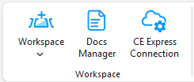
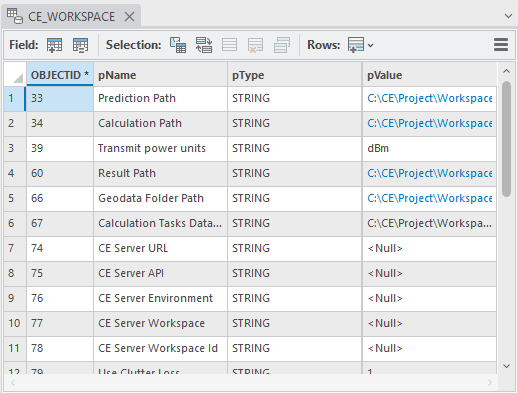
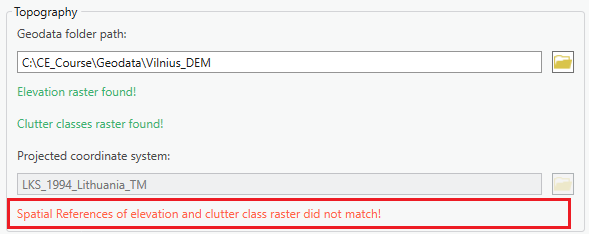
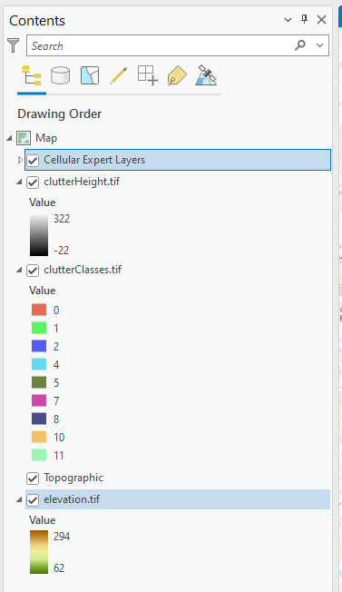
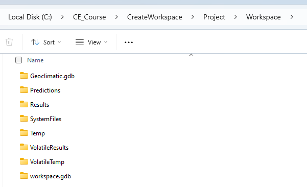
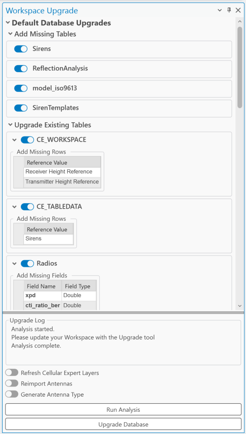
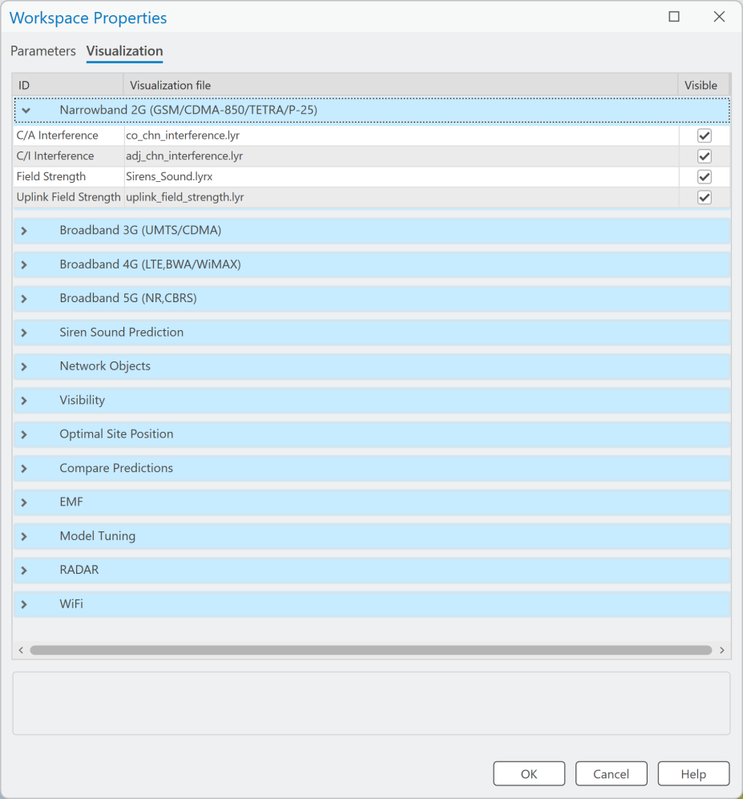
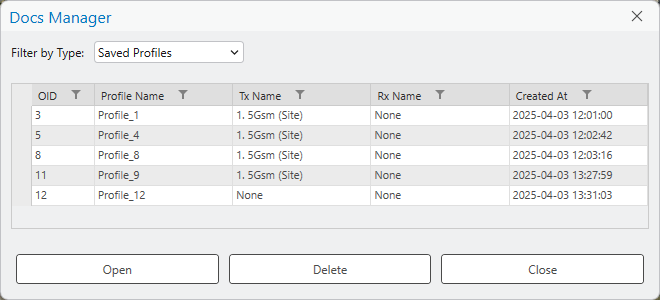
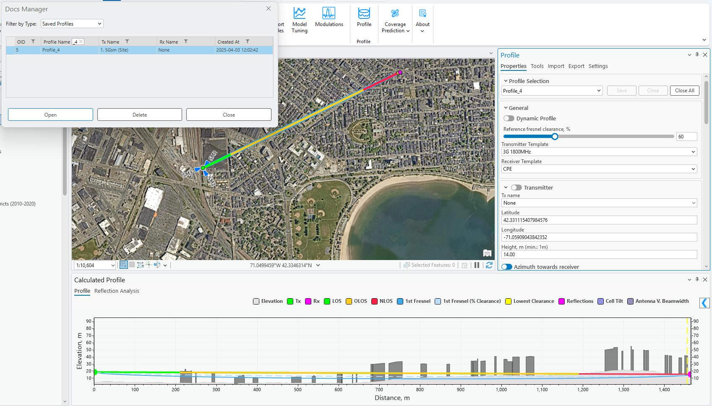
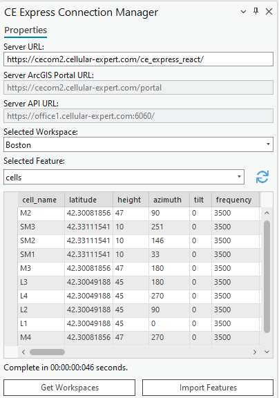

Workspace
Note: Shared across all CE Desktop Pro modules. See "Indoor Workspace" for the Indoor-specific creation flow.
6. Workspace
This chapter describes the Cellular Expert workspace functionality.
6.1 Workspace Tool
6.1.1 Workspace Table
Cellular Expert workspace is a geodatabase containing data tables, feature datasets, and the workspace definition table. After creating a new workspace database, the workspace definition table will be named


CE_WORKSPACE and contain the information about the dataset.Data field types and values: • OBJECTID – long integer type • pName – text type • pType – text type • pValue – text type When moving your project’s directory to another location (to another computer), it is necessary to update the workspace parameters by referencing the new paths to properly load the project: • Prediction Path – path for storing prediction grids • Calculation Path – path for temporary calculations • Calculation Tasks Data Path – path for saving calculation tasks • Geodata Folder Path – path for geodata (prediction models do not have geodata options, topographical

 data are taken from the Geodata Folder Path)
• Result Path – path for final results
Workspace calculation paths and settings can be previewed in the dedicated tool, navigate to Workspace
data are taken from the Geodata Folder Path)
• Result Path – path for final results
Workspace calculation paths and settings can be previewed in the dedicated tool, navigate to Workspace
Properties. It would show all parameters listed in CE_WORKSPACE table.
6.1.2 Create Workspace
Steps to create a new workspace:
-
Click the Create button in the Cellular Expert Workspace menu.
-
The Create dialogue will appear. Fill in the minimum required data: New workspace path It is automatically filled based on the ArcGIS Pro project location. The recommendation is to first save your

ArcGIS Pro project and then open the Workspace > Create tool. The project's workspace folder will be automatically created in the ArcGIS Pro project location catalog. This way, you will have both the ArcGIS Pro and CE workspace in the same location. Geodata folder path Catalog where geodata files are stored. More about Geodata requirements are listed in 5. Geographic data topic. Click on Browse button to define Geodata catalog. Geodata must have specific names: • The Digital terrain model must be named elevation.tif • The land use (or clutter) grid must be named clutterClasses.tif • The clutter heights (typically building and vegetation height) grid must be named clutterHeight.tif
Note: The projected Coordinate System has been filled automatically and taken from the defined Elevation grid. This means that this coordinate system will be assigned to your project feature layers. When creating a new workspace using geodata containing clutter classes raster, default class IDs can now be set by clicking Set Default Clutter Class IDs button. The default ID values are based on Living Atlas clutter. Clutter class IDs can also be set manually, either before or after the default values are set. To initiate

 the manual editing of clutter class IDs, click the Manually Set Clutter Class IDs button. Each clutter class
can be edited to designate its used and unused types, also indicated by their distinct colors.
the manual editing of clutter class IDs, click the Manually Set Clutter Class IDs button. Each clutter class
can be edited to designate its used and unused types, also indicated by their distinct colors.
Several messages related to Geodata: • If only Elevation exists in Geodata catalog, then tool will be filled with such information:



 Clutter Classes and Clutter Height are optional.
• If coordinates mismatch between elevation and clutter, then it will provide this message:
Please close Workspace Create tool and fix your geodata. You can use Geoprocessing tools,
Define Projection tool to fix this issue. Define the same coordinate as elevation.tif for your
clutterClasses.tif and if available, clutterHeight.tif rasters.
Also Create Local Scene
Use the option to create a second scene for 3D visualization.
Clutter Classes and Clutter Height are optional.
• If coordinates mismatch between elevation and clutter, then it will provide this message:
Please close Workspace Create tool and fix your geodata. You can use Geoprocessing tools,
Define Projection tool to fix this issue. Define the same coordinate as elevation.tif for your
clutterClasses.tif and if available, clutterHeight.tif rasters.
Also Create Local Scene
Use the option to create a second scene for 3D visualization.
- Press OK button to start workspace creation procedure. Cellular Expert layer and geodata will be added to the project.
Workspace geodatabase and required folders will be created within successful workspace creation


procedure.The Project Paths will be filled in the Workspace Properties → Properties tab.

6.1.3 Open Workspace
Steps to open a workspace:
-
Click the Open option in the Workspace menu of the Cellular Expert toolbar.
-
Specify the workspace name and click the OK button. The specified workspace will be activated automatically.
6.1.4 Remove Workspace
Upon selecting Remove in the Workspace dropdown menu, the workspace will be removed from the currently open ArcGIS Pro project.
6.1.5 Workspace Upgrade
Workspace Upgrade is a tool that enables the user to update missing tables from the default database (default.gdb). If the table exists, Workspace Upgrade also checks if all default fields are present in that table. If the tables are toggled, they will be updated (upgraded) by the tool. Usually, with new versions of CE for ArcGIS Pro come changes to default data tables. This tool is especially
 useful when checking if the newest version tables correspond to the current project tables.
Workspace Upgrade automatically checks all these parameters and notifies the user upon the start-up of
the project.
useful when checking if the newest version tables correspond to the current project tables.
Workspace Upgrade automatically checks all these parameters and notifies the user upon the start-up of
the project.
| Parameter | Description |
|---|---|
| Refresh Cellular Expert Layers | Imports missing layers from Cellular Expert Dataset. |
| Reimport Antennas | Imports the deleted default antennas back to the Antennas table. |
| Generate Antenna Type | Based on the Antenna data assign antennas a type if they are missing it. |
| Run Analysis | Manually checks if the default tables and their fields exist in the project. |
| Upgrade Database | |
| Creates the missing tables and/or creates/adds back the missing fields from default tables. | |
| If a project with incompatible geodata is loaded, the Workspace Upgrade tool analyzes the current geodata, |

as well as the owned user Esri Extension licenses to offer the optimal geodata upgrade path. This process is one-time only, and can be done by checking the Upgrade Geodata toggle.• If only elevation and buildingHeight rasters exist, the buildingHeight can automatically be renamed
 to clutterHeight.
• (Image Analyst and Spatial Analyst licenses only) If elevation, buildingHeight and clutterHeight
rasters exist, raster calculations are performed to merge the buildingHeight and clutterHeight
rasters.
• (Image Analyst and Spatial Analyst licenses only) If elevation, buildingHeight, clutterHeight and
clutterClasses rasters exist, raster calculations are performed to merge the buildingHeight and
clutterHeight rasters, and modify the clutterClasses raster to add the building outlines with ID of 0.
to clutterHeight.
• (Image Analyst and Spatial Analyst licenses only) If elevation, buildingHeight and clutterHeight
rasters exist, raster calculations are performed to merge the buildingHeight and clutterHeight
rasters.
• (Image Analyst and Spatial Analyst licenses only) If elevation, buildingHeight, clutterHeight and
clutterClasses rasters exist, raster calculations are performed to merge the buildingHeight and
clutterHeight rasters, and modify the clutterClasses raster to add the building outlines with ID of 0.
6.1.6 Workspace Properties
The Workspace properties dialogue shows all the workspace information from the “CE_WORKSPACE” data table. It also enables the user to customize the symbol visualization. To open the Workspace Properties dialogue, click on the Workspace menu icon and choose Properties.
6.1.6.1 Parameters All information from the “CE_WORKSPACE” table is represented in the Parameters tab of the Workspace

 Properties.
OK
Click this button to save any changes and close the dialogue.
Cancel
Click this button to cancel any changes and close the dialogue.
Properties.
OK
Click this button to save any changes and close the dialogue.
Cancel
Click this button to cancel any changes and close the dialogue.
Help Get helpful information about the dialogue. CE Server Parameters | Parameter | Description | |---|---| | ArcGIS Portal URL | Connection URL to the ArcGIS Portal website. | | CE Server API | Connection URL to Cellular Expert Server API. | | CE Server Environment | Cellular Expert Server environment in which it is run. | | CE Server URL | Connection URL to Cellular Expert Server. | | CE Server Workspace | The workspace used in the Cellular Expert Server. | | CE Server Workspace ID | The ID of the workspace which is used in the Cellular Expert Server. | Project Paths Parameters | Parameter | Description | |---|---| | Calculation Path | Path for temporary calculation results. | | Calculation Tasks Data Path | Path for the calculation results that will be displayed in the Calculation Task List. | | Geodata Folder Path | Path to a folder in which the geodata from the Cellular Expert Workspace is stored. | | Prediction Path | Path for storing prediction grids. | | Result Path | Path for storing the final calculation results | | Volatile Calculation Path | Path for temporary Quick Prediction calculation results. | | Volatile Result Path | Path for storing the final Quick Prediction calculation results | | Volatile Tasks Data Path | Path for the Quick Prediction calculation results that will be displayed in the Calculation Task List. |
Project Settings Parameters Calculate EIRP Determines whether calculate EIRP or no in the prediction calculations. • Value YES. EIRP will be calculated based on Power, Antenna Gain and Misc. Loss values. • Value NO. EIRP will be taken as single value defined in Power field. Enable GPU Acceleration Enables GPU Accelerations that optimizes the prediction calculations and makes them run faster. Possible values Yes/No. Transmit Power Units Represents power value in dBm or Watts. Receiver/Transmitter Height Reference The reference raster for calculating the receiver’s and transmitter’s height for these calculations: Profile, RF
 Predictions, Quick Predictions, Visibility and other prediction tools. Possible values:
• Elevation – reference layer will be used elevation.tif raster. This is a default parameter.
• Clutter height – reference layer will be used clutterHeight.tif raster. Receiver/transmitter height will
be calculated over Clutter Height raster. clutterHeight.tif raster is a must to enable this parameter.
• Clutter height (buildings only) – Height reference is calculated using the Building class from the
clutterClasses.tif raster. The Building class is defined in the Clutter Class dialog and linked to a
specific clutter class ID in the clutterClasses.tif raster.
• Absolute – receiver and/or transmitter’s absolute height (relative to sea level) will be used in
relevant calculations.
Use Clutter Loss
Determines whether clutterClasses.tif and clutterHeight.tif rasters are used in prediction calculations.
Possible values Yes/No.
Rounding
The rounding value for different parameters.
Predictions, Quick Predictions, Visibility and other prediction tools. Possible values:
• Elevation – reference layer will be used elevation.tif raster. This is a default parameter.
• Clutter height – reference layer will be used clutterHeight.tif raster. Receiver/transmitter height will
be calculated over Clutter Height raster. clutterHeight.tif raster is a must to enable this parameter.
• Clutter height (buildings only) – Height reference is calculated using the Building class from the
clutterClasses.tif raster. The Building class is defined in the Clutter Class dialog and linked to a
specific clutter class ID in the clutterClasses.tif raster.
• Absolute – receiver and/or transmitter’s absolute height (relative to sea level) will be used in
relevant calculations.
Use Clutter Loss
Determines whether clutterClasses.tif and clutterHeight.tif rasters are used in prediction calculations.
Possible values Yes/No.
Rounding
The rounding value for different parameters.
6.1.6.2 Visualization The Cellular Expert network objects (Sites, Cells, OMEN) and calculation result rasters are represented in


ArcGIS with the symbology as defined in the .lyr files, located in the Visualization tab (“CE_LAYERS” table).OK Click this button to save any changes and close the dialogue. Cancel Click this button to cancel any changes and close the dialogue. Help Get helpful information about the dialogue. All visualization settings have the “Visible” option set to On by default. Suppose the Visible option is set to off, the next time a relevant calculation is performed. In that case, the rasters associated with the calculation are added to the map with the visibility disabled. This is done only for the calculations performed after the setting is changed, and does not impact already added rasters on the map. The symbology is defined as a list of Layers and .lyr files: • Narrowband 2G (GSM/CDMA-850/TETRA/P-25) – second generation network (like GSM) calculations or technology-independent calculations (for example, the symbology for antenna loss by tilt is defined by the same file for WiMAX, LTE, and other technology) • Broadband 3G (UMTS/HSDPA) – results for UMTS, HSDPA and other 3 - 3.5 generation technologies • Broadband 4G (LTE, BWA/WiMAX) – results of LTE technology calculations • Broadband 5G (NR, CBRS) – results of 5G-NR technology calculations • Siren Sound Prediction – results of sirens calculations • Network objects – Sites, Cells, OMEN • Visibility – results of Visibility Calculations • Optimal Site Position – results of optimal site positioning. • Compare predictions – the results of comparing several predictions. • Model Tuning – results of model calibration • Radar – results of radar coverage calculations • Wi-Fi – results of Wi-Fi coverage calculations For example, the layer 4G Downlink Throughput with defined path dl_ul_throughput.lyr means that the 4G downlink bitrate prediction raster will be represented in ArcGIS using the symbology file …/Cellular Expert/Layers/dl_ul_throughput.lyr Note: if you change the symbology with ArcGIS tools, it will be saved only in the current ArcGIS project. So, when you re-open the same Cellular Expert workspace in another ArcGIS project, the symbology will be defined in the Visualization tab of the Workspace Properties dialogue. To create a new visualization and locate it in the Workspace Properties: • Right-click on the layer with the modified symbology (for example Sites) in the ArcGIS Table Of Contents • Choose Sharing > Save As Layer File… from the opened menu • Save the file with a given name (for example Sites_my_symbol.lyrx) • Copy/Paste it to C:\Program Files\Cellular Expert\Layers • Open the Cellular Expert workspace in which you want to use your symbology • Open the Workspace Properties dialogue and select the Visualization tab • Select the row with the corresponding layer name (for example Sites)
• Click the browse button and locate your layer file (for example “C:\Program Files\Cellular Expert\Layers\Sites_my_symbol.lyrx”) which contains the modified symbols. Press the OK button. • The symbology for the Cellular Expert network objects (Sites, Cells, OMEN) will be applied to the layers when you open the workspace next time. To see the changes immediately re-open the workspace (close it using the Remove option and open it again with the Open option from the workspace menu) The new symbology will be uploaded and remain assigned to the workspace database independently of the ArcGIS project file. When you use layer files for visualization, do not forget about them. Remember that when you move your workspace to another location, the location path settings can become incorrect. If Cellular Expert is not able to find your defined symbology file, it will use the default file from the location .../Cellular Expert/Layers.

6.2 Docs Manager
Docs Manager is a tool for managing Saved Profiles between the transmitter (Tx) and receiver (Rx), which are generated in the Profile tool, as well as saved Link Prediction results, Profile Reports, and Link Prediction Reports. When a profile is saved in the Profile tool, it is automatically stored in Docs Manager, allowing users to reopen it at any time. This ensures that all parameters and calculations related to Tx and Rx are preserved for future reference, eliminating the need to reconfigure settings repeatedly. The same applies for Link Prediction results, and the Reports can be opened if the original exported document is, for example, deleted from Desktop or other saved location. How to Find a Saved Profile Use the filter option for each field to quickly locate the required profile from the list.
How to Open a Profile A saved profile can be accessed in two ways:
-
Double-click on the desired profile.
-
Select the profile and click Open. Additional Functions • Delete: Removes the selected profile. • Close: Closes the Docs Manager dialog. By using Docs Manager, users can efficiently store and retrieve profiles, ensuring consistency and accuracy


in their Tx and Rx calculations.How to Open a Link Prediction A saved Link Prediction, just like Profile, can be accessed either by double-clicking the desired Link

 Prediction result, or by select it and clicking Open.
How to Save a Link Prediction
Link Prediction result can be saved to Docs Manager by selecting Save result to Docs Manager in the
Link Prediction tool.
Prediction result, or by select it and clicking Open.
How to Save a Link Prediction
Link Prediction result can be saved to Docs Manager by selecting Save result to Docs Manager in the
Link Prediction tool.
How to Open a Profile Report A Profile Report document can be accessed either by double-clicking the desired Profile Report, or by select

 it and clicking Open. The document will be opened using your default PDF document reader.
How to Save a Profile Report
Profile Report of the current drawn profile can be saved to Docs Manager by selecting Save result to Docs
Manager in the Export tab of the Profile tool.
it and clicking Open. The document will be opened using your default PDF document reader.
How to Save a Profile Report
Profile Report of the current drawn profile can be saved to Docs Manager by selecting Save result to Docs
Manager in the Export tab of the Profile tool.
How to Open a Link Prediction Report A Link Prediction Report document can be accessed either by double-clicking the desired Link Prediction

 Report, or by select it and clicking Open. The document will be opened using your default PDF document
reader.
How to Save a Link Prediction Report
Link Prediction Report can be saved to Docs Manager by selecting Save result to Docs Manager in the
Export tab of the Link Prediction tool.
Report, or by select it and clicking Open. The document will be opened using your default PDF document
reader.
How to Save a Link Prediction Report
Link Prediction Report can be saved to Docs Manager by selecting Save result to Docs Manager in the
Export tab of the Link Prediction tool.
6.3 CE Express Connection
CE Express Connection is a tool that lets you establish a connection between the CE Express database and CE for ArcGIS Pro. When the connection is established, data can be retrieved from CE Express and uploaded to CE for ArcGIS Pro workspace. For the connection to be established you must have access to ArcGIS Portal and have a valid CE Express URL.
6.3.1 Properties
Click the button and select the Properties tab to open the CE Express Connection dialogue. To connect to CE Server Express and get the list of workspaces, insert the Server URL in the corresponding field. Then press the Get Workspaces button. If you select one of the appearing workspaces, the properties of that workspace will be saved to your current

 ArcGIS Pro project automatically.
ArcGIS Pro project automatically.
| Parameter | Description |
|---|---|
| Server URL | The URL to the CE Express database where the workspaces will be located. This parameter must be defined to connect to the database. |
| Server ArcGIS Portal URL | The URL to your organization’s ArcGIS Portal (filled in automatically). |
| Server API URL | The API is used in the connection process (filled in automatically). |
| Selected Workspace | The list of all workspaces was retrieved from the CE Express Database. |
| Get Workspaces | |
| Establishes the connection between the provided Server URL and CE for ArcGIS Pro. Upon clicking the | |
| button, the user may be redirected to a browser window in which he will have to log in to the ArcGIS Portal. |

After doing so, the workspaces will be retrieved. Import Features Imports the retrieved objects to the currently opened CE workspace.